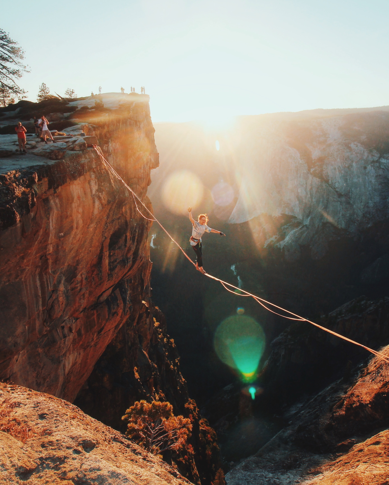

SlackLine
PRUEBA MODIFACION RAMA


¿Que es el SlackLine?
El slackline es un deporte de equilibrio en el que se utiliza una cinta plana normalmente de nylon o poliéster
(conocida en el mundo del slackline como "línea"), sujeta entre dos puntos fijos, generalmente árboles.
¿Cuál es el origen del slackline?
El slackline tiene su origen a una pareja de escaladores (Adán Grosowsky y Jeff Ellington) del Valle de Yosemite
en California, a principios de los años 80' que empezaron a practicarlo utilizando las cadenas y cables cercanos
a los aparcamientos como forma de entretenimiento. Con el tiempo progresaron y empezaron a utilizar sus equipos
de escalada. El deporte empezó a cobrar fama y expandirse mundialmente dando paso a lo que conocemos como
slackline.